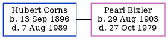

Hubert Frank Corns 1896 - 1989
[ Home ] | [ Calendar ] | [ Surnames Index ] | [ Errors ] | [ Family History ]Hubert Corns, the husband of Pearl Luella Bixler (the fourth cousin twice-removed on the mother's side of Nigel Horne), was born on 13 Sept 18961,2,3,4. He married Pearl in Owen, Indiana, USA in 19205.
He died on 7 Aug 1989 in Indiana1,2,4 and was buried on Riverside Cemetery, 498 West Jefferson Street, Spencer, Indiana c. 1989.
Citations
- Social Security Death Index - Findmypast
- United States Billion Graves index - Findmypast
- United States Marriages - Findmypast
- United States Obituary Notices - Findmypast
- United States Marriages - Findmypast
Media
United States Billion Graves index - US/BMD/BILLION/011337284
Social Security Death Index - USBMD/SSDI/304180467
United States Obituary Notices - US/TRIB/034647052
Family Tree
Map
Generated by ged2site. Last updated on Jul 3, 2024
Known Issues
Burial date (abt 1989) has no citations
Date of birth is known, but not place
No records of living with anyone